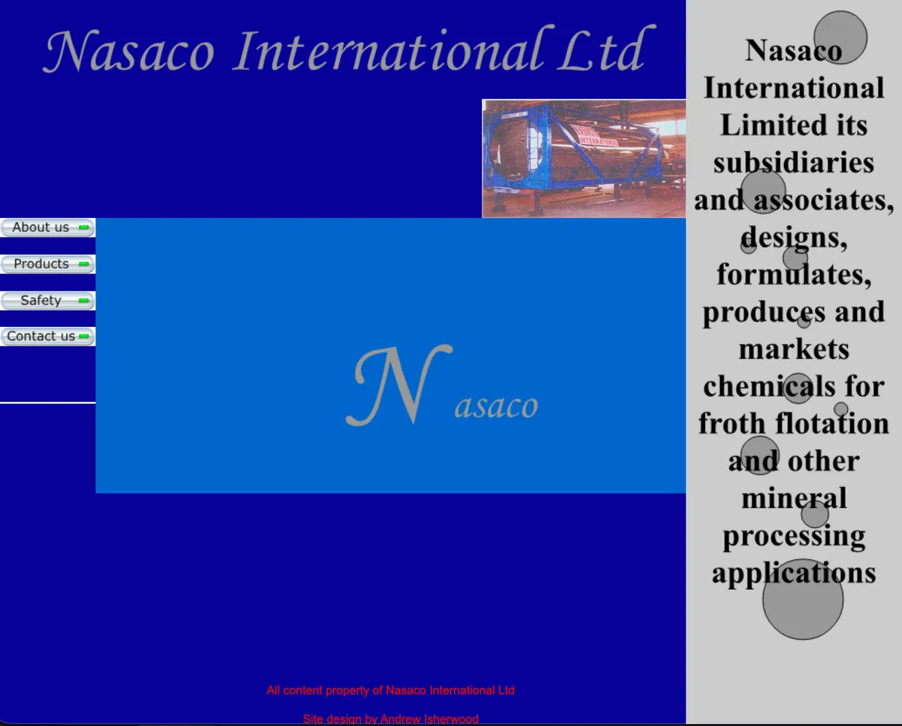

The story
Nasaco International designs, formulates, produces and markets chemicals for froth flotation and other mineral processing applications.
I built their first website in 2002, when I was 18. Twenty-four years later, they're still a client.

TODO How the relationship has carried on between 2002 and now.
The brief
Nasaco's site ran on WordPress, which meant regular plugin and core updates to keep it secure, and hosting built to run a database.
The brief was simple: keep the content, lose the maintenance.
TODO Anything specific Nasaco asked for, or any problems the old site was causing.
The build
I moved the site from WordPress to a static build made with Hugo and hosted on Netlify. Every page is built ahead of time and served from a global CDN, so there's no database, no plugins and no admin login to attack.
TODO Anything notable about the migration: how content was moved, redirects, design changes.
Before and after
TODO: before screenshot TODO: after screenshot
The results
- Speed: TODO before and after load times or Lighthouse scores.
- Security: no plugins to patch and no database to break into.
- Hosting: TODO old and new monthly hosting cost.